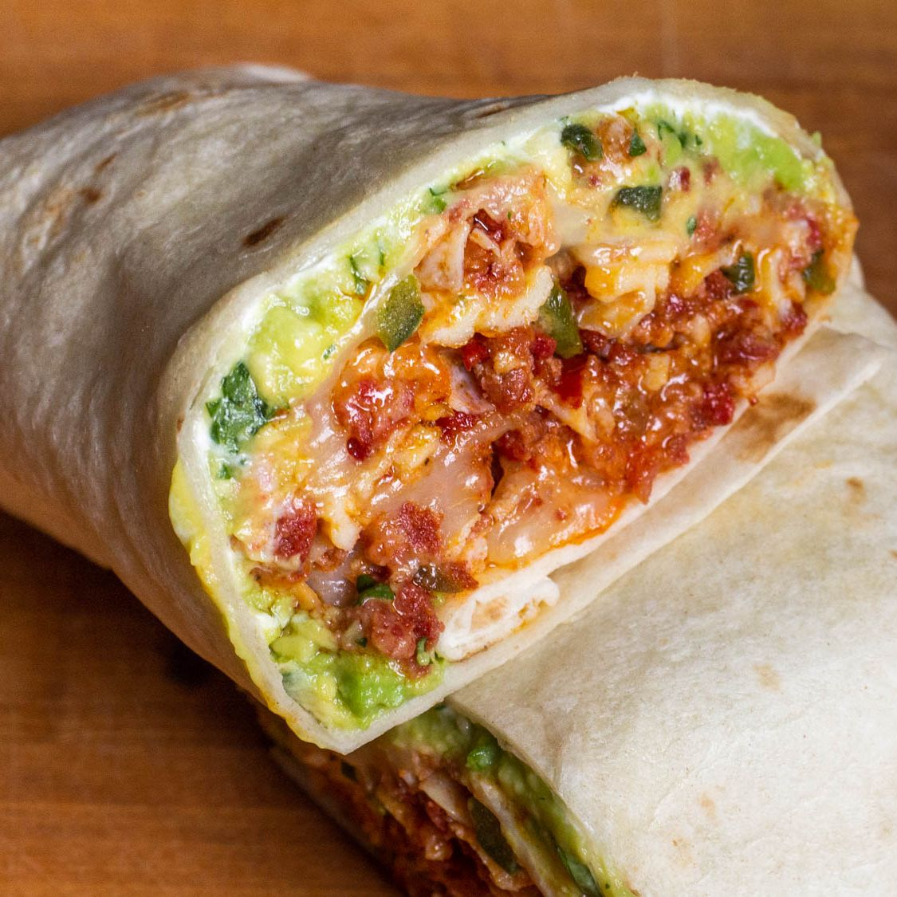

Uri's Breakfast Burrito
Take a basic bean-and-cheese burrito, then turn it into breakfast. That's the basic thinking behind this flour-tortilla torpedo stuffed with scrambled eggs, melted Pepper Jack cheese, creamy refried beans, guacamole, crema (or sour cream), chorizo, and more.
Ingredients
- 4 large eggs
- Kosher salt and freshly ground black pepper
- 1 medium Poblano pepper
- 8 ounces fresh Mexican chorizo (about 2 large links), casings removed
- 2 ounces shredded Pepper Jack cheese
- 2 large flour tortillas, warmed through on a dry griddle or cast iron pan
- 1/4 cup warm refried beans
- 2 tablespoons crema or sour cream
- 1/4 cup guacamole